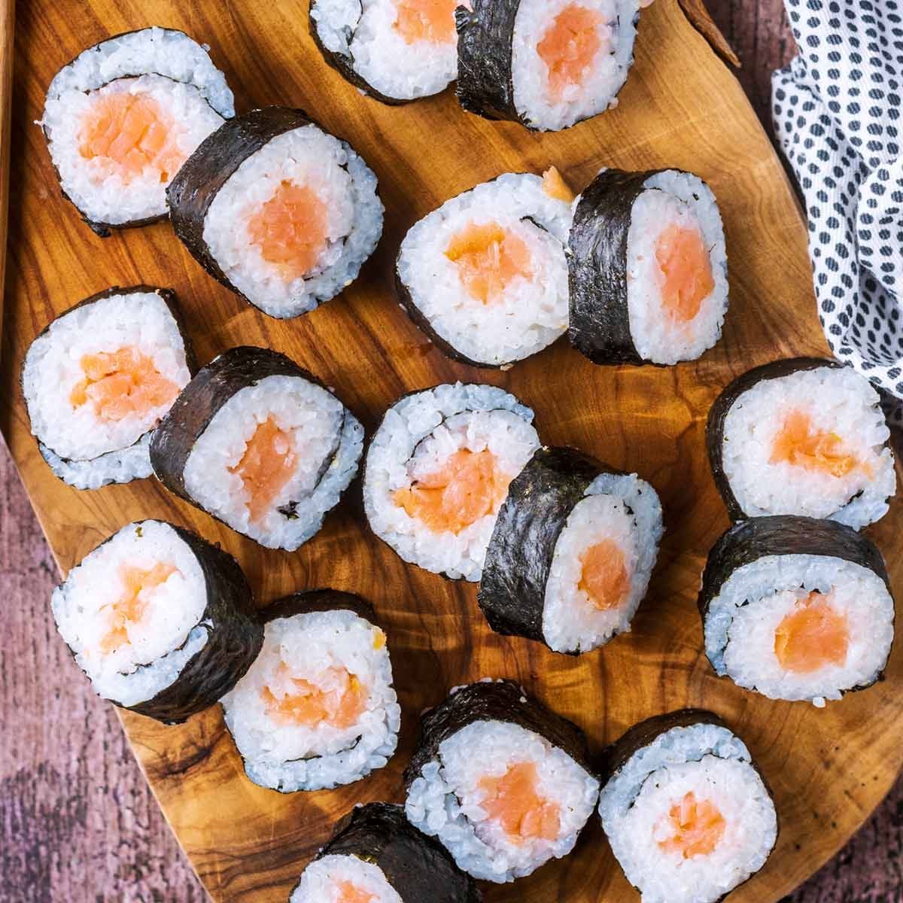

Tasty Salmon Sushi Roll

Description
We're going to make a fun lil salmon maki roll using some common ingredients you can buy from your local H-Mart! All you'll need are a few ingredients, some patience, and a love for raw fish.
Ingredients
- Seaweed
- Sushi-grade salmon
- Sushi rice
- Soy sauce
- Wasabi
Steps
- Lay out all the ingredients on the kitchen counter
- Lay seaweed flat on surface and place 3 inches of rice on seaweed
- Place salmon on top of seaweed
- Top that bad boy off with a lil wasabi
- Roll up your sushi and dip it in soy sauce before consuming
- Profit!